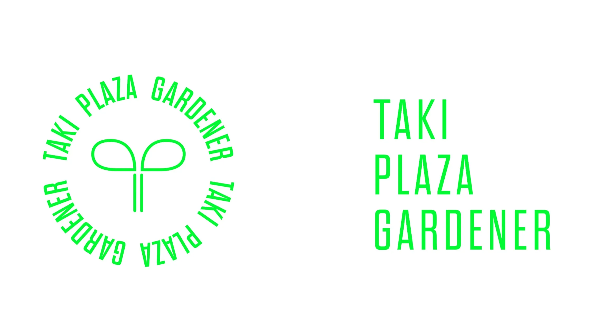

2022年2月25日
TPGってどんな団体？【新歓ブログリレーVol.1】

こんにちは。Taki plaza Gardener(通称TPG)リーダーの小山です。
まずは、東工大に合格された皆さん、本当におめでとうございます！！！
楽しい大学生活が送れることを心より願っています。
今回は、2023新歓ブログリレー第一弾ということでTPGのリーダーから、TPGとはどのような団体であるのかを紹介していきたいと思います。
そもそもTaki Plazaってなに？
我々TPGの団体名に入っている「Taki Plaza」とはいったい何なのかわからないですよね。
簡単に説明すると、Taki Plazaとは東工大卒で現ぐるなび会長の滝久雄氏による寄付金によって建てられた東工大の新たなランドマークであり、主に国際・学生交流、学生支援を目的とした施設です。正門前にある丘のような特徴的な建造物なので大岡山キャンパスに一度訪れたことのある方は見たことがあるんじゃないかと思います。

Taki Plaza外観
さらに詳しいことは前リーダーが書いてくれたこの記事が分かりやすいので参照してください。(前リーダーに感謝)
TPGってなに？
何となく「Taki Plaza」について分かってもらえたと思うので、次にTPGという団体について説明します。
TPGの正式名称はTaki Plaza Gardenerであり、Taki Plazaをガーデニングする、つまり「耕し育てていく」という意味合いを込めて名付けられた団体で、簡単に言うと東京工業大学大岡山キャンパスにある国際交流施設「Taki Plaza」を企画運営している学生団体です。
ただ、これだと抽象的過ぎて具体的にどのような活動を行っているか分からないですよね。僕だったら分からないです笑
ということで、TPGについてさらに深堀りしていきたいと思います。
主な活動は？
TPGの主な活動はざっくりいうとTaki Plazaを利用者にとって居心地がいい空間にするためにイベントやワークショップを企画・運営したり、装飾などによって空間づくりをしたり、利用者の声を聴いてその要望を施設に反映したり、、、とにかくTaki Plazaが利用者にとってより良い施設になるように様々なことをしています。
そして、それを実現するためにTPGにはそれぞれ得意分野の異なる五つの班から構成されています。それぞれの班については以下のリンクから知ることが出来るので、見てみてください。
イベントの様子
普段はなにしてるの？
ここで気になってくるのが活動頻度だったり活動形態ですよね。
活動頻度としては基本的には週１回で、主に班ごとにミーティングを行っています。
ただ、イベント直前であったりすると、集まれる人だけで＋αでミーティングがあったりすることもありますし、逆に試験前だったり長期休暇に入るとミーティングをやらない週があったりもする感じです。
ミーティングの内容としては、例えばイベント班であったら、企画したイベントのスケジュール調整だったり、企画内容を話し合いの中で詰めて行ったり、広報班であったら、どのようにTaki Plazaについてより東工大生にしってもらえることができるのかについて話し合ったりしています。
こんな感じでミーティングを重ねていき、最終的にはイベントであったりホームページであったりワークショップであったりと、様々な形で各班がTaki Plazaをより良い施設にするよう活動しています。
どんな人たちがいるの？
TPGの活動が分かってくると次に気になるのはTPGがどのような人たちで構成されているかですよね。
現在は現役メンバーとしては学士2年(22B)は36人、学士3年(21B)は21人の計57人で活動しており、4年生で引退したけど在籍しているメンバー(4年生～院生)を加えると100人程度の比較的大規模な団体です。
メンバーにはすべての学院の人がいて、留学生も7人在籍しているため、非常に多様性に富んでいると思います。あと、みんないい意味で個性が強いので、ただ一緒に活動しているだけで本当に楽しいです。本当は一人一人焦点を当てて話したいくらいですけど、ここでは控えておきます笑
TPGが気になったあなたへ！！
こんな感じでTPGについてザックリ説明してみました。
ここまでブログを読んでくれたあなたはきっとTPGへの興味が湧いたと思います。(願望)
ここに書いてあることは本当にTPGについてのほんの一部分なのでもっと知りたい！と思った方は是非zoomで行われるTPG説明会にご参加ください！
ブログではわからないTPGの魅力をお伝え出来ると思います。
説明会の日程に関してはTwitter新歓用公式アカウント やinstagram公式アカウント で随時お知らせするので、フォローしてお待ちください！
最後までブログを読んでくださりありがとうございました。
次のブログはリーダーの紹介です！お楽しみに！